Visualist: plugin for crime analysts¶
Aims¶
The goal of Visualist is to provide a one-stop resource for many common Crime Analysts GIS tasks, without the need for additional software, libraries, or complex workarounds.
If you would like to report a bug, make suggestions for improving visualist, or have a question about the tools, please use: https://github.com/esc-unil/Visualist/issues
Plugin functionalities¶
Visualist provides a growing suite of spatial data management and analysis functions that are both quick and (I hope) functional.
Cartography
Proportional Symbols Map
Grid Map
Choropleth Map
Graduated Lines Map
Graduated Segmented Lines Map
Nearest Neighbours Clusters Map
Spatial Autocorrelation Map (LISA analysis)
Spatial statistics
K-Nearest Neighours analysis
Utils
Load data from a spreadsheet
Load layers from a folder
Proportional Symbols Map¶
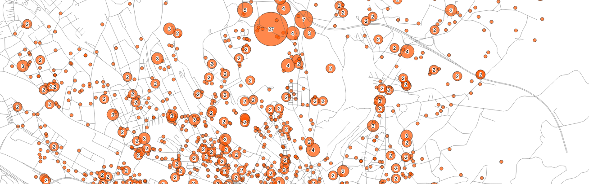{kind=link}
Proportional symbol maps group all points with the same position together at a single point. A circle whose size is proportional to the number of events is then created.
The points can also be grouped with a polygon layer to represent all cases within each area as a single agregate.
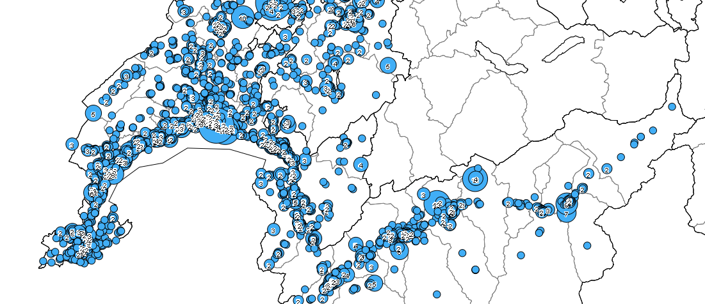 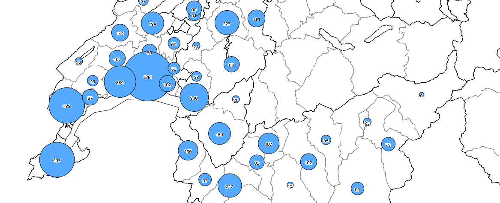{kind=link}
{kind=link}
Examples of maps with proportional symbols: on the right with a grouping of points with the administrative layer of districts.
Configuration¶
Points
The input points layer.
Polygons [optional]
The optional polygon layer to agregate points and use the centroïd of areas.
Count field name
Name of the field created in the output layer
Output
A new point layer if a polygon layer is not defined, or a copy of the polygon layer with the a new count field.
Grid Map¶

The grid map divide the area into squares and represent the number of events present in each cell.
The operation is quite simple. The program creates a layer of polygons (squares) whose size can be configured. Then the number of events present in each square is counted.
The choice of the grid size can be guided by the average distance expected if the points were randomly distributed:
d = 0.5 * Square root of A/n where A = area and n = number of events
Configuration¶
Points
The input points layer.
Grid extent
Extent parameter to define the area of the grid (the extent of the canvas, the layer or a selection)
Size of the grid
Distance parameter to define the size of each cell (in the unit of the points layer).
Count field name
Name of the field created in the output layer
Output
A new polygon layer with a count field.
Choropleth Map¶
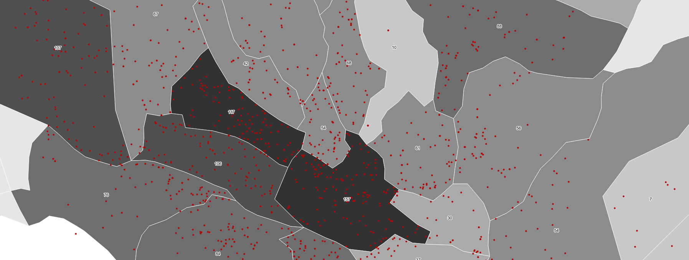{kind=link}
Choropleth maps represent a quantity (number of events, percentages, etc.) by color (or pattern) for administrative areas. They allow values to be compared by region and demographic information to be used to weight measurements.
History |
|
|---|---|
|
{kind=link}
This type of map is relevant for a comparison by administrative region and allows the number of events to be weighted against, for example, the number of inhabitants, dwellings, businesses.
The operation is relatively simple. From a layer of polygons (administrative regions), the number of events (from a layer of points) contained in each zone is calculated. A new polygon layer containing a column storing the values is created.
Be careful, these maps generate the perception that the distribution of events is uniform in each area.
Configuration¶
Polygons
The polygon layer to agregate points.
Points
The input points layer.
Weight field [optional]
A numeric field to weight the values (e.g. number of inhabitants or dwellings).
Multiplier [optional]
A numeric value for wheighting (default value si %)
Count field name
Name of the field created in the output layer
Output
A new polygon layer with a count field.
Graduated Lines Map¶
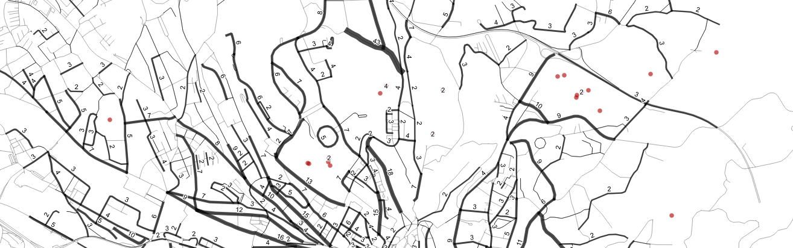{kind=link}
Graduated line maps represent the number of events along roads (polyline layer). Events are projected onto the segments closest to their positions, but only if the distance between them is less than a configurable threshold (e. g. 50 meters).
Configuration¶
Lines
The input lines layer to agregate points.
Points
The input points layer.
Names of roads in lines / points layer [optional]
The string fields containing the names of roads to match (Levenshtein alg.) If they are not set, the closest line is used.
Maximum distance to the line
A distance parameter (in unit of the line layer) to avoid the projection of points too far from the lines.
Count field name
Name of the field created in the output layer
Outputs
A new line layer with a count field.
A new proportional symbols layer with two class of points: points linked to a line (in green) and points not linked to a line (in red).
Graduated Segmented Lines Map¶
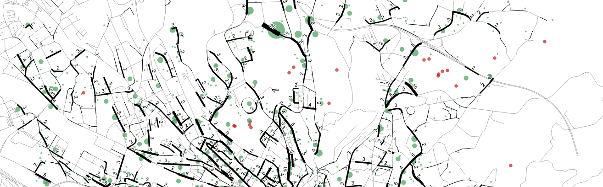{kind=link}
Graduated Segmented line maps represent the number of events along roads (polyline layer). The algorithm starts by dividing the roads into segments whose length can be configured. The segment closest to each point is then identified. Events are projected onto the segments closest to their positions, but only if the distance between them is less than a configurable threshold (e. g. 50 meters).
Configuration¶
Lines
The input lines layer to agregate points.
Size of the segments
A distance parameter (in unit of the line layer) to split the lines in segments
Points
The input points layer.
Names of roads in lines / points layer [optional]
The string fields containing the names of roads to match (Levenshtein alg.) If they are not set, the closest line is used.
Maximum distance to the line
A distance parameter (in unit of the line layer) to avoid the projection of points too far from the lines.
Count field name
Name of the field created in the output layer
Outputs
A new line layer with a count field.
A new proportional symbols layer with two class of points: points linked to a line (in green) and points not linked to a line (in red).
Nearest Neighbours Clusters Map¶
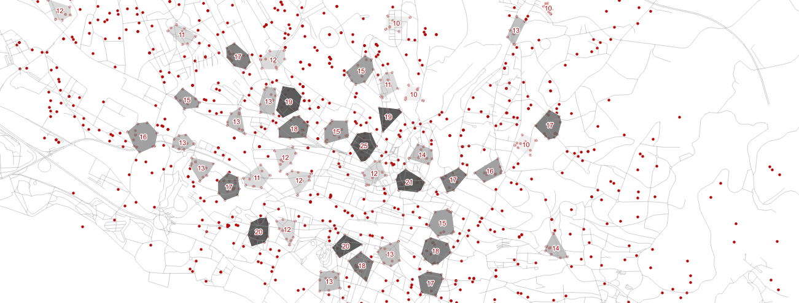{kind=link}
The map shows the hotspots identified by the analysis of the closest neighbours. This algorithm is a simplified version of Ned Levine’s algorithm [ned2015] in CrimeStat: http://nij.gov/topics/technology/maps/pages/crimestat.aspx.
Explaination¶
The algorithm works like this:
1. For each event, a square centred on the position of the event and with a size of twice the search distance is used to select close neighbours. The distances with these neighbours are calculated and events are considered as close neighbours of the event if the distance is less than or equal to the search distance.
2. The event with the most neighbours is selected. They form the first hot spot. They are removed from the distribution and the following event with the highest number of neighbours is selected. They form the second hot-spot, etc. The algorithm is recursive until there is no more events with a number of neighbours greater than or equal to to the defined cluster size.
3. For each cluster, the centre of gravity is calculated. The distances are recalculated with the gravity centres to ensure that the areas do not overlap. Indeed, some events may change groups if two hotspots are spatially close.
4. The convex envelope of each cluster is used to represent the hot points by polygons.
Unlike Ned Levine’s algorithm in CrimeStat (Nearest Neighbor Hierarchical Clustering) [ned2015], the map represents only first-order clusters.
Examples¶
The examples below show the advantages of using this method rather than a density map or grid map
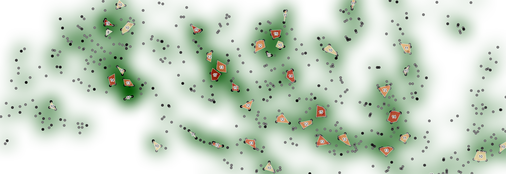{kind=link}
Nearest Neighbours Clusters always contain events, unlike the heatmap (the worst method for crime analysis thus not include in the plugin). In addition, the quantities directly represent the number of events that occurred in each area.
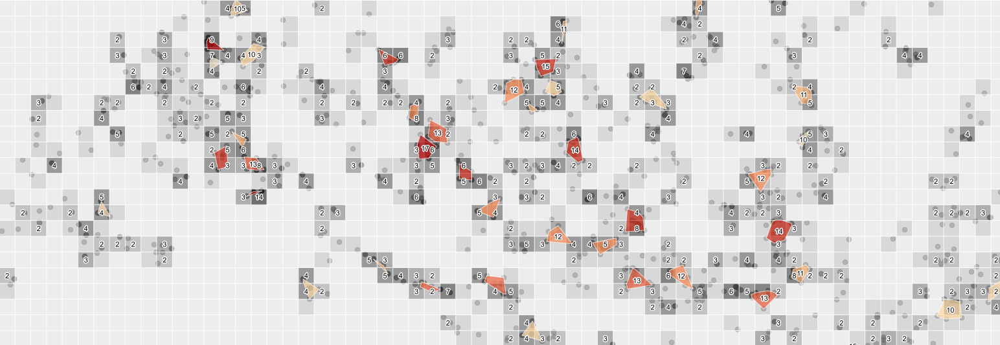{kind=link}
Areas are defined directly by the distribution of the events, while on a grid map the agregation is defined by the size of the grid and the position of the total area. On a grid map, the origin of the grid changes the representation.
Configuration¶
Points
The input points layer.
Maximum distance between points
A distance parameter (in unit of the point layer) to define what is a close neighbour.
The choice of the distance should be guided by the average distance expected if the points were randomly distributed:
d = 0.5 * Square root of A/n where A = area and n = number of events
Minimum size of the clusters
A numeric parameter to define the size of the clusters (i.e. the minimum number of events to consider an area as a hotspot).
Count field name
Name of the field created in the output layer
Output
A new polygon layer with a count field.
Spatial Autocorrelation Map¶
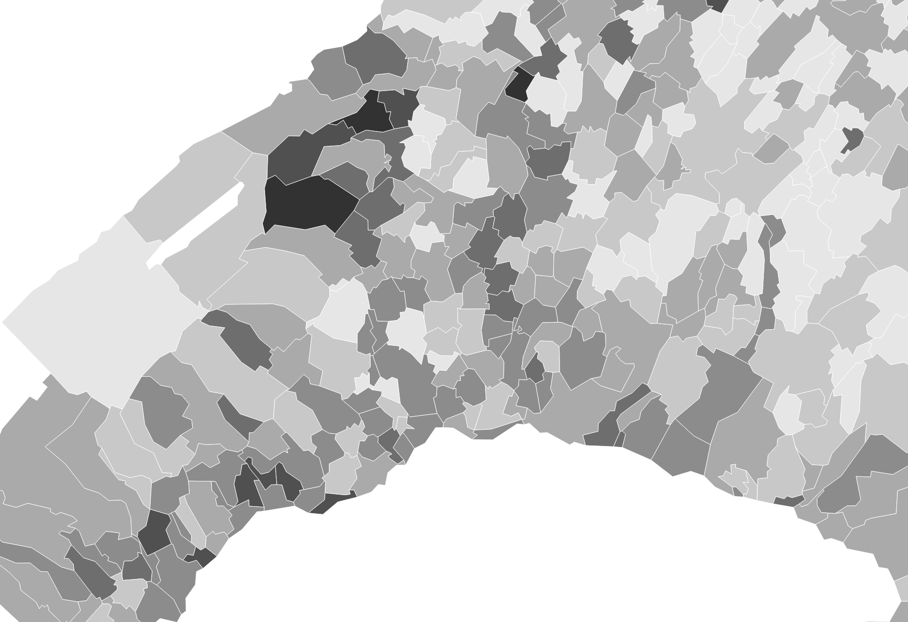 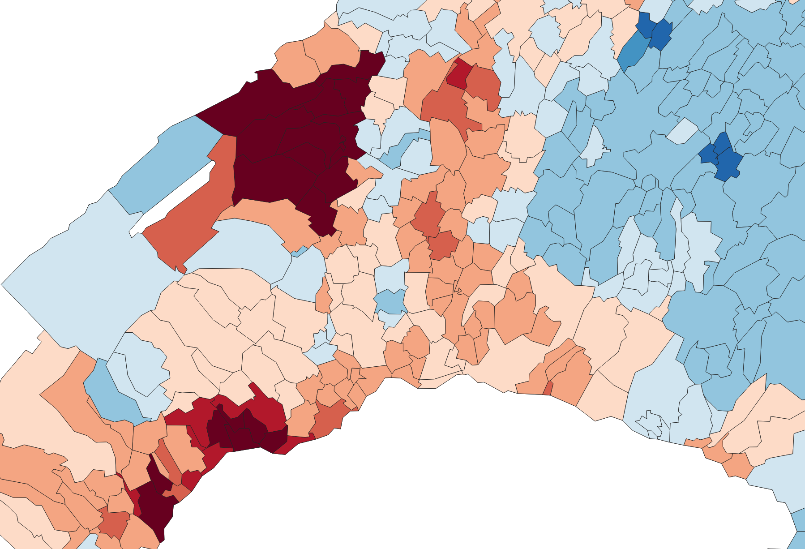 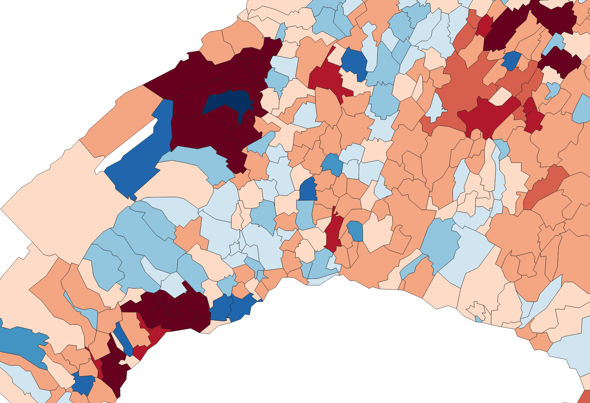 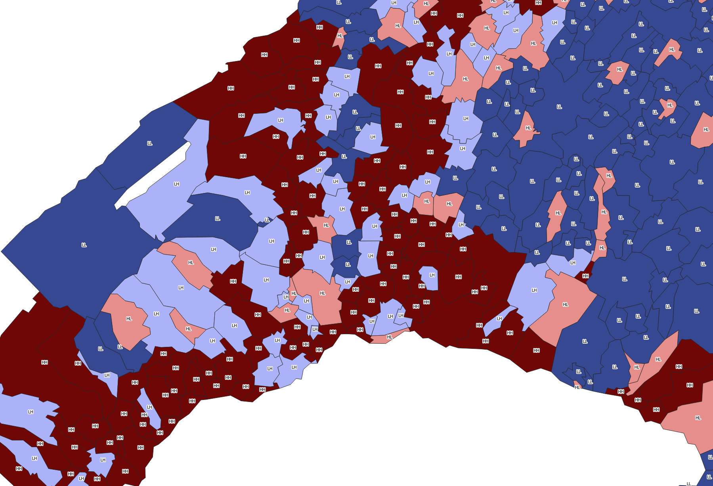{kind=link}
{kind=link}
{kind=link}
{kind=link}
These maps are generated with PySAL: Python Spatial Analysis Library from Rey, S.J. and L. Anselin [ran2010]
{kind=link}
Acknowledgements¶
This 3.0 version was created with Plugin Builder
It integrate:
the plugin SpreadsheetLayers (C) 2014 by Camptocamp (https://github.com/camptocamp/QGIS-SpreadSheetLayers)
a light version of the pysal module for LISA analysis (https://pysal.readthedocs.io/en/latest/)
functionalities inspired from Victor Olaya processing plugins (https://github.com/volaya?tab=repositories)
functionalities inspired from Crimestat made under the direction of Ned Levine (https://nij.gov/topics/technology/maps/pages/crimestat.aspx)
References¶
- ned2015(1,2)
LEVINE, Ned (2015). CrimeStat: A Spatial Statistics Program for the Analysis of Crime Incident Locations (v 4.02). Ned Levine & Associates, Houston, Texas, and the National Institute of Justice, Washington, D.C. August.
- ran2010
REY, Sergio J. & ANSELIN, Luc. (2010). PySAL: A Python library of spatial analytical methods. In : Handbook of applied spatial analysis. Springer, Berlin, Heidelberg, 2010. p. 175-193.